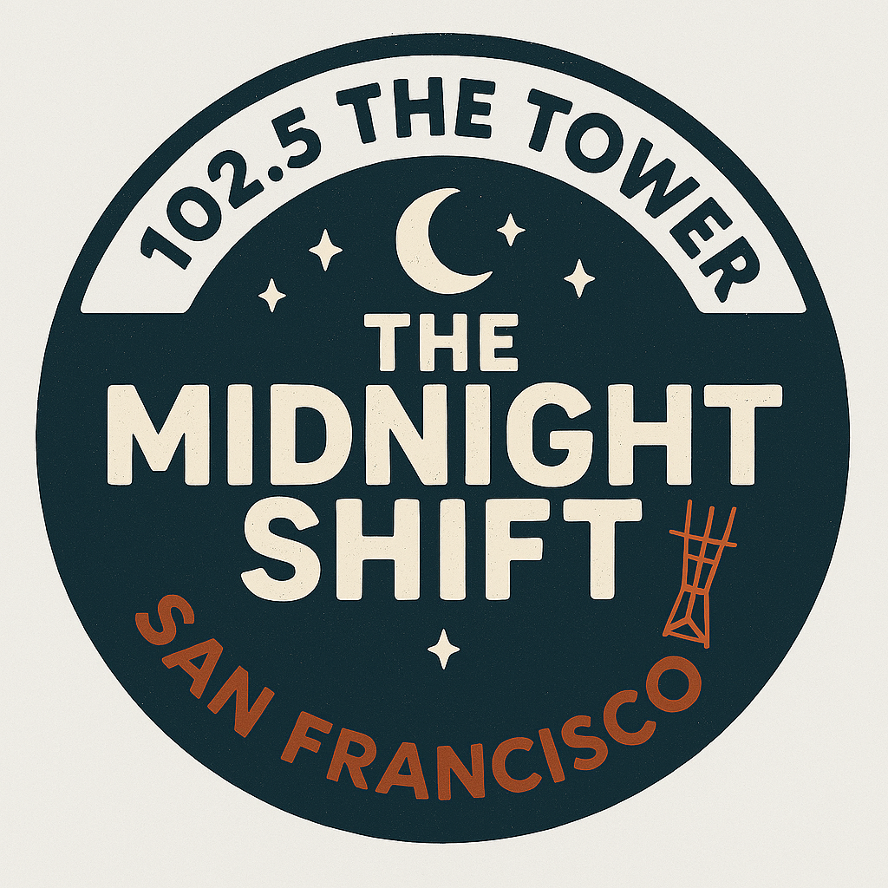

The Midnight Shift - 102.5 The Tower
From the End of the Rainbow - The
Soundtrack
of the City
2009
The First Show
The First Show [2]
Show #2 [10/21/2009]
Show #2 [2]
The Dad Show
The Dad Show [2]
Show #10 [11/12/2009]
Show #10 [2]
Show #11 [11/14/2009]
Show #11 [2]
Show #12 [11/17/2009]
Show #12 [2]
Show #13 [11/19/2009]
Show #13 [2]
Show #14 [11/21/2009]
Show #14 [2]
The Palindrome Show
The Palindrome Show [2]
Show #16 [12/02/2009]
Show #16 [2]
Show #17 [12/04/2009]
Show #17 [2]
Show #18 [12/07/2009]
Show #18 [2]
The XMas Show
The XMas Show [2]
2010
The Old-Timey Show
The Old-Timey Show [2]
Show #21 [2/1/2010]
Show #21 [2]
The Kind of Blue Show
The Kind of Blue Show [2]
The Exotica Show
The Exotica Show [2]
Show #24 [2/19/2010]
Show #24 [2]
The Rock Show
The Rock Show [2]
The Theme Show
The Theme Show [2]
Show #27 [3/9/2010]
Show #27 [2]
Show #28 [3/13/2010]
Show #28 [2]
Songs About God
Songs About God [2]
The Birthday Party Show
The Birthday Party Show [2]
The Jazz Show
The Jazz Show [2]
Show #34 [4/11/2010]
Show #34 [2]
2011
Show #48 [3/27/2011]
Show #48 [2]
The Broke-Ass Edition
The Broke-Ass Edition [2]
Show #50 [4/10/2011]
Show #50 [2]
Live Covers
Live Covers [2]
The Mussorgsky Show
The Mussorgsky Show [2]
The Guilty Pleasures Show
The Guilty Pleasures Show [2]
The Twilight Shift
The Twilight Shift [2]